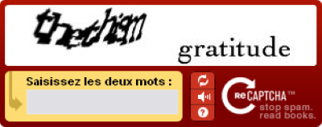
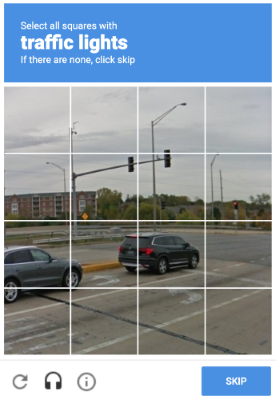
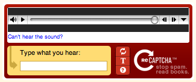
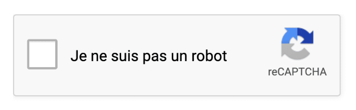

💡 L'invention du CAPTCHA
Dans les debuts d'internet les forums et les sites d'achats était extrèmement populaire. La raison est que ces sites facilitait des tâches qui nécessait des tâches intermediaire. Par exemple pour avoir la solution d'une quête d'un jeux vidéo il fallait acheter un magzine, appeler une hotlines ou alors le bouche à oreille. Lorsque les forums sont arrivés l'entierté de ces tâches ont été remplacé par le simple fait de se rendre sur le forum et demander la solution si aucun utilisateur l'a fait avant. Dans le cas des sites d'achats cela permettait aux utilisateurs de pouvoir acheter des articles introuvables dans leur villes.
Automatisé une tâche est certes une facilité et un gain de temps enorme au grand public, mais cela ouvre des failles. En effet un simple script suffisait à parcourir site et d'y faire tout ce qui y était possible. Pour les forums les sites se retrouvaient pollué de faux commentaires ce qui rendait difficile la disscution avec d'autres utilisateurs. Pour les site d'achats le problème est pire, à l'annonce d'un concert les pirates s'empressent d'envoyer des milliers de bots achetaient un ticket pour les revendre ensuite à des prix exorbitants. La solution trouvé à cela est le CAPTCHA, inventé en 2000 par une equipe de chercheurs de Carnegie Mellon University composée de Luis von Ahn, Manuel Blum Nicolas Hopper et John Langford.
🔄 Differents usages du CAPTCHA
Les premiers CAPTCHA était des textes déformés, ils étaient pratique car extrement simple pour un humain mais peu accessible pour un robot à l'époque. C'est 200 millions de CAPTCHA déchiffré en 2006, cela suffit pour convaincre l'equipe de l'université Carnegie-Mellon a utilisé le temps passer par les utilisateurs au profit de la litterature. De là vient la création de reCAPTCHA en 2007.

A premiere vue ce CAPTCHA est comme les autres mais en un peu plus complqué car ici on a deux mot. Un mot déformé et un mot écrit normalement. Comment cette simple modification peut servir à la litterature ?
En réalité le test de logique visant à éloigner les robots n'est que le premier mot déformé. Le deuxième est un mot issu d'un livre numérisé au préalable. Pour faciliter et accélerer la numerisation de livre lorsque plusieurs utilisateurs lisait le même mot sur un reCAPTCHA celui-ci était retenu et servait à la numerisation de livres (en general de vieux livres).
🏢 Rachat de reCaptcha par Google
En 2009 les CAPTCHA sont présent sur beaucoup de site mais suite au rachat de Google en 2009 on peut maintenant les voir partout et surtout dans les outils de Google (Gmail, Youtube, etc...). Suite à cela Google vit une opportunité pour son outils de GPS en ligne Google Maps. De la même manière que l'auteur de CAPTCHA le faisait avec les livre Google utilise le temps des utilisateurs pour améliorer son service.

Sur cette image on observe la même logique que le reCaptcha plus haut on a un premier test logique visant à déterminer si l'utilisateur est un humain. Le deuxième test est une image prise de Google Street View (outils de Google Maps permettant de se balader dans une ville comme si on y était). Dans notre cas il s'agit du numero d'un batiment (8001).
🖼️ Captcha image
Les Captcha textuel deviennent de plus en plus obsoletes, les methodes de reconnaissance de texte etant très performantes il etait simple pour les intelligences artificielle de les contourner. Le Captcha image est la solution adopté par Google car les robots y était moins préparé et en plus, cela etait aussi utile pour améliorer Google Maps.
Cette méthode est encore utilisée aujourd'hui pour empêcher les robots d’accéder aux sites. Les questions sont variées : il peut s’agir de choisir quelles images représentent un véhicule ou un animal (ou autre), ou encore de sélectionner plusieurs parties d'une image en répondant à une question. Par exemple, dans l’image ci-dessous, on nous demande de sélectionner les feux rouges. Ce processus contribue à améliorer la précision de Google Maps en informant les usagers de la présence d’un feu tricolore. De plus, Google entraîne son IA de reconnaissance d’images sur Google Street View grâce à nos réponses.

Les Captcha cité précedement sont performant mais limité déja par l'évolution exponentielle des intelligences artificielle et des outils moderne de reconnaissance d'image ou de texte. Par ailleurs ils peuvent poser problèmes pour les personnes en incapacité à dechiffrer des mots complexes (dyslexie, etc...) ou les aveugles.
Google proposera des alternatives comme les Captcha audio mais cela aussi se retrouver très facilement contournable avec les outils actuel.

✅ Captcha "Je ne suis pas un robot"
Pendant des années, les utilisateurs devaient déchiffrer du texte déformé ou sélectionner des images représentant des objets comme des feux de circulation ou des passages piétons. Mais en 2014, Google a introduit une alternative plus simple et plus rapide : la fameuse case à cocher "Je ne suis pas un robot", connue sous le nom de reCAPTCHA v2.
Contrairement aux Captcha traditionnel celui-ci visiblement ne vous demande rien, juste une case à cocher. Comment fait-il ?

Si le test est un echec un Captcha image peut être demandé en complement mais du point de vue de l'utilisateur humain, le test sera effectué en 3 seconde. Google a proposé ici une alternative très rapide et simple pour n'importe quel utilisateurs. Cependant cela soulève quelques questions liés à la confidentialité. Est-ce que consulter l'historique d'un utilisateur est vraiment acceptable ?